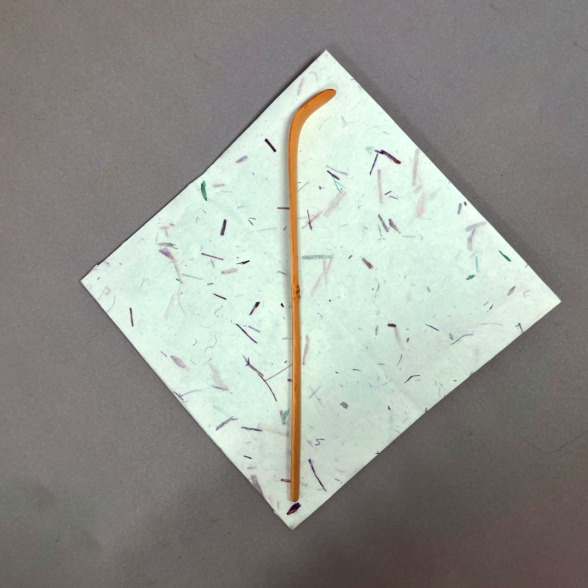
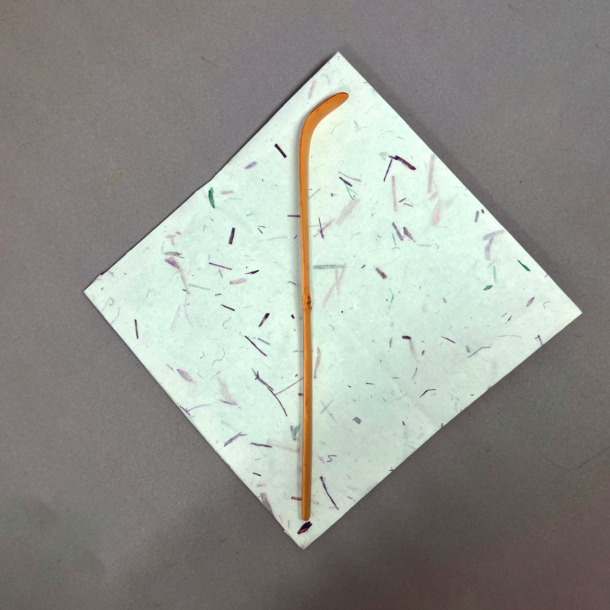
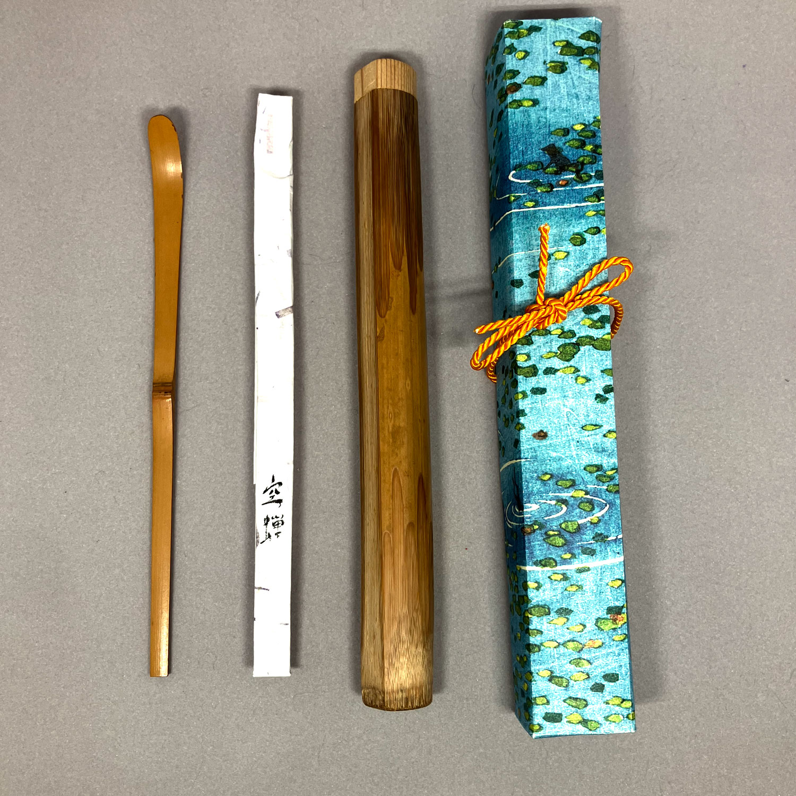
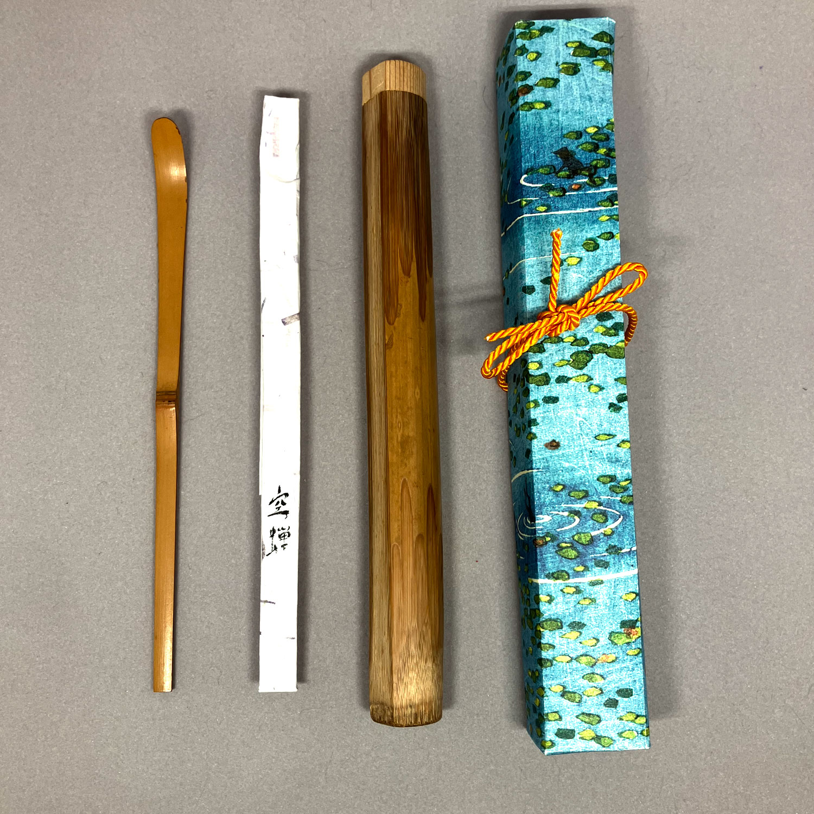

花散里
maker unknown 80 CHF
花散里
この茶さじは、すすのついた竹から作られています。有名な源氏物語の第11章と同じ名前を共有しています: 花散里、これは花が村に散りばめられたという意味です。この章では、源氏皇子は雨の降る夏の午後を過ごしながら、昔の日々について語り、落ちた柑橘の橘の香りを楽しんでいます）。 この茶さじには同じような力と憂愁を感じると思います。特に夏に適しており、紙箱と紙仕覆が付属しています。四角い紙と棗は比較用であり、含まれていません
注文 (茶杓, 価格： 80 スイスフラン)早乙女
made by 岡田三郎 180 CHF


早乙女
made by 岡田三郎伝統的に、早乙女は日本の稲作サイクルにおいて重要な時期である初夏に田んぼで稲を植える女性を指します。稲を植える行為は農業にとって重要であり、日本の農業遺産を祝い讃える文化的な儀式や祭りに囲まれています。 この茶さじは初夏のイメージと本質を呼び起こし、土地と季節の循環へのつながりを反映しています。この選択は稲作者の労働と献身に対する尊敬を象徴し、人間の活動と自然のリズムとの調和した関係を強調しています。
注文 (茶杓, 価格： 180 スイスフラン)
初笑
maker unknown 40 CHF


初笑
1月は「初めて」の月です: 初夢、初釜、書初などが有名ですが、他にも重要なものがたくさんあります。例えば、年の初めの初笑などです。そのため、1月はよい茶杓であり、濃茶の厳粛な雰囲気に軽やかさをもたらします。
注文 (茶杓, 価格： 40 スイスフラン)
森林浴
maker unknown 40 CHF
 


森林浴
これは、下部と節に近い興味深いディテールがあるシンプルな竹製の茶さじです。森林の中を歩くような、さわやかでエレガントな感じがします。その名前、森林浴は、森林浴、あるいは科学的には森林療法として翻訳されます。人々は常に森林の静けさを楽しんできましたが、この用語は1980年代に人々が自然と再びつながろうとすることがポピュラーになりました。
この視点では、自然を楽しむ単純な意味だけでなく、人類が自然に与えたダメージを元に戻そうとする事後工業の欲望と闘いも見つけることができます。
注文 (茶杓, 価格： 40 スイスフラン)
空蝉
made by 岡田三郎 120 CHF

 

空蝉
made by 岡田三郎名前はいくつかの意味でパンです：まず最初に、そのままで、バッタの殻はかなり詩的な象徴です。成長するために以前の自分を捨てなければならないという意味があります。しかし、これは源氏物語の登場人物の名前でもあり、美しいとは限らないが、源氏王子を立派な行動と良い味で感心させた女性の名前です。私の意見では、この側面は、この茶さじのシンプルでエレガントな作りにぴったり合っています。 最後に、しかし、言葉「空蝉」自体も興味深いです。「空蝉」は通常、バッタの殻ではなく、一般的な生き物を意味します。これは、この言葉を書くために使用される文字が、その意味ではなく、音のために後から追加されたためです。そして、時間とともに、この言葉は「虚ろなバッタの殻」という意味も持つようになりました。 セミが強い夏のモチーフであることから、この茶さじは夏に最も適しているかもしれません。しかし、その名前のより哲学的な解釈を考えると、濃茶用として通年使用することもできます。紙箱、竹管、および紙製の仕覆が付属しています。竹管は後から追加されたもので、茶さじの元の製作者によって作られたものではありません。四角い紙や棗は比較用
注文 (茶杓, 価格： 120 スイスフラン)